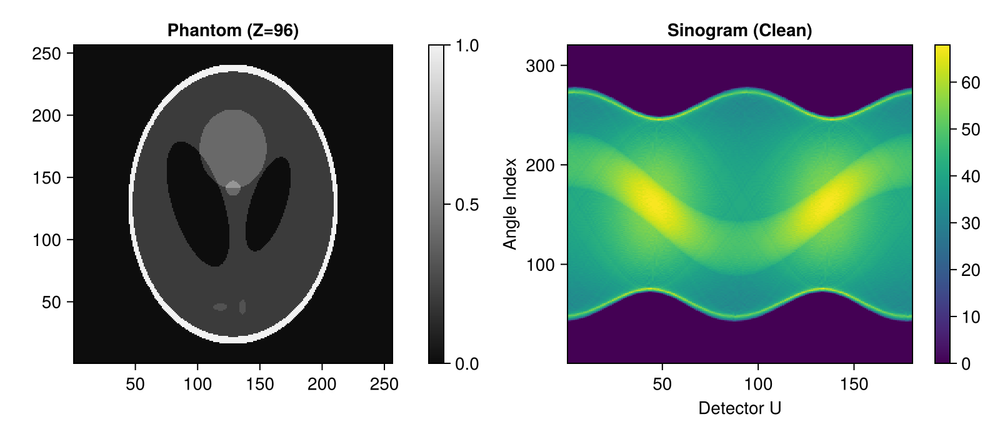
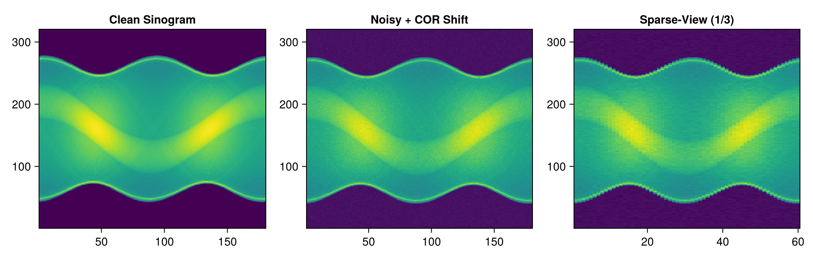
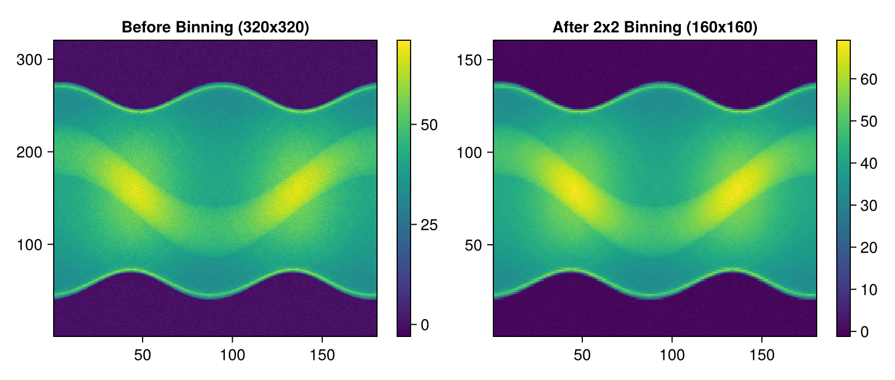
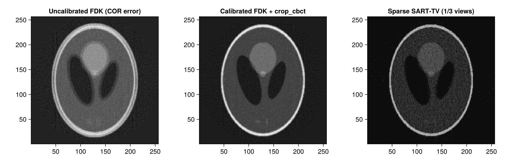

CT Projection Preprocessing & Pipeline Demo with Tigre.jl
This tutorial demonstrates an end-to-end computed tomography workflow covering:
- Step 1: Clean Data Preparation: 3D Shepp-Logan phantom synthesis and cone-beam forward projection (
Ax). - Step 2: Realistic Acquisition Artifacts & Noise:
- Centre-of-rotation (COR) misalignment.
- Low-dose transmission noise simulation (
add_ct_noise) via the Beer-Lambert attenuation model. - Sparse-view angle downsampling (
subsample_angles).
- Step 3: Projection Preprocessing & Geometry Adaptation:
- Automatic COR offset estimation and alignment (
computeCOR). - Spatial detector binning and geometry synchronization (
binning). - Redundancy weighting for short-scans (
parkerweight!).
- Automatic COR offset estimation and alignment (
- Step 4: Reconstruction, FOV Masking, and Quality Assessment:
- Analytical (FDK) and iterative (SART / SART-TV) reconstruction.
- Cylindrical Field of View (FOV) cropping (
crop_cbct!). - Quantitative image fidelity evaluation (
measure_quality: PSNR, SSIM, RMSE, NCC).
Relevant Tigre.jl Functions
Tigre.computeCOR: Estimates center-of-rotation offset from sinograms.Tigre.binning: Downsamples detector projections and adapts Geometry.Tigre.subsample_angles: Angular subsampling for sparse-view CT.Tigre.add_ct_noise: Realistic Poisson quantum and Gaussian electronic noise.Tigre.parkerweight!: Redundancy smooth weighting for short-scan geometries.Tigre.crop_cbct!: In-place zero-allocation cylindrical FOV masking.Tigre.measure_quality: Quantitative evaluation (RMSE, PSNR, SSIM, UQI, NCC).
Prerequisites
This tutorial uses Makie (recommended backend: CairoMakie) for visualization. If CairoMakie is not installed in your environment, add it by running using Pkg; Pkg.add("CairoMakie").
using LinearAlgebra
using Printf
using Random
using CairoMakie
using TigreStep 1: Clean Data Preparation
We define a standard 3D cone-beam acquisition geometry and synthesize an analytical Shepp-Logan phantom volume.
# Configure cone-beam geometry
nangles = 180
angles = LinRange(0f0, 2f0 * Float32(pi), nangles + 1)[1:end-1] |> collect
geo = Geometry(
mode = :cone,
angles = angles,
nVoxel = (256, 256, 256),
sVoxel = (256f0, 256f0, 256f0),
nDetector = (320, 320),
sDetector = (480f0, 480f0),
DSO = 1000f0,
DSD = 1500f0,
)
# Generate analytical 3D Shepp-Logan phantom
phantom = shepp_logan_3d(volume_size(geo))
# Compute ground-truth forward projections
clean_projections = Ax(phantom, geo)
println("Volume size: ", size(phantom))
println("Projections size: ", size(clean_projections))
# Display axial slice (Z = 3N/8) and sinogram
mid_z = 3 * size(phantom, 3) ÷ 8
mid_v = size(clean_projections, 2) ÷ 2
fig = Figure(size = (800, 350))
ax1 = Axis(fig[1, 1], title = "Phantom (Z=$mid_z)", aspect = DataAspect())
hm1 = heatmap!(ax1, phantom[:, :, mid_z], colormap = :grays)
Colorbar(fig[1, 2], hm1)
ax2 = Axis(fig[1, 3], title = "Sinogram (Clean)", xlabel = "Detector U", ylabel = "Angle Index")
hm2 = heatmap!(ax2, clean_projections[:, mid_v, :]', colormap = :viridis)
Colorbar(fig[1, 4], hm2)
figVolume size: (256, 256, 256)
Projections size: (320, 320, 180)
Step 2: Realistic Acquisition Artifacts & Noise Simulation
In real CT imaging, raw detector projections suffer from physical non-idealities:
- Center of Rotation (COR) offset: Misalignment between detector origin and rotational axis.
- Quantum & Electronic Noise: Low-dose protocols reduce photon counts, producing Poisson noise.
- Sparse Angular Sampling: High-speed or low-dose imaging protocols acquire fewer projections.
# 1. Simulate COR misalignment by introducing a physical offset (+2.5 mm)
cor_offset_true = 2.5f0
geo_misaligned = Geometry(
mode = geo.mode,
angles = geo.angles,
nVoxel = geo.nVoxel,
sVoxel = geo.sVoxel,
nDetector = geo.nDetector,
sDetector = geo.sDetector,
DSO = geo.DSO,
DSD = geo.DSD,
COR = cor_offset_true,
)
projections_misaligned = Ax(phantom, geo_misaligned)
# 2. Add realistic CT transmission noise (low dose: I0 = 10,000 incident photons)
rng = Random.MersenneTwister(42)
noisy_projections = add_ct_noise(
projections_misaligned;
I0 = 10000.0, # Lower photon count = lower radiation dose
gaussian = (0f0, 0.5f0), # Electronic readout noise
poisson = true,
rng = rng,
)
# 3. Simulate sparse-view CT (subsample by factor of 3 -> 60 projections)
sparse_projections, sparse_geo = subsample_angles(noisy_projections, geo_misaligned, 3)
println("Full view projections: ", size(noisy_projections, 3))
println("Sparse view projections: ", size(sparse_projections, 3))
fig = Figure(size = (1000, 320))
ax1 = Axis(fig[1, 1], title = "Clean Sinogram")
heatmap!(ax1, clean_projections[:, mid_v, :]', colormap = :viridis)
ax2 = Axis(fig[1, 2], title = "Noisy + COR Shift")
heatmap!(ax2, noisy_projections[:, mid_v, :]', colormap = :viridis)
ax3 = Axis(fig[1, 3], title = "Sparse-View (1/3)")
heatmap!(ax3, sparse_projections[:, mid_v, :]', colormap = :viridis)
figFull view projections: 180
Sparse view projections: 60
Step 3: Projection Preprocessing & Alignment
Now we apply Tigre.jl preprocessing utilities to clean and prepare the data before reconstruction:
computeCOR: Automatically estimate the unknown COR displacement.binning: Downsample detector spatial resolution to boost SNR and accelerate reconstruction.
# 1. Automatic Centre-of-Rotation (COR) Estimation
estimated_cor = computeCOR(noisy_projections, geo)
@printf("True COR offset: %+.3f mm\n", cor_offset_true)
@printf("Estimated COR offset: %+.3f mm (Error: %.4f mm)\n", estimated_cor, abs(estimated_cor - cor_offset_true))
# Calibrate geometry with estimated COR
geo_calibrated = Geometry(
mode = geo.mode,
angles = geo.angles,
nVoxel = geo.nVoxel,
sVoxel = geo.sVoxel,
nDetector = geo.nDetector,
sDetector = geo.sDetector,
DSO = geo.DSO,
DSD = geo.DSD,
COR = estimated_cor,
)
# 2. 2x2 Spatial Binning of Detector Data
# Simultaneously downsamples projections and updates Geometry (nDetector, dDetector, sDetector)
binned_proj, binned_geo = binning(noisy_projections, geo_calibrated, 2; mode = :mean)
println("Original detector dimensions: ", geo_calibrated.nDetector, " pitch: ", geo_calibrated.dDetector)
println("Binned detector dimensions: ", binned_geo.nDetector, " pitch: ", binned_geo.dDetector)
fig = Figure(size = (800, 340))
ax1 = Axis(fig[1, 1], title = "Before Binning (320x320)")
hm1 = heatmap!(ax1, noisy_projections[:, mid_v, :]', colormap = :viridis)
Colorbar(fig[1, 2], hm1)
ax2 = Axis(fig[1, 3], title = "After 2x2 Binning (160x160)")
hm2 = heatmap!(ax2, binned_proj[:, binned_geo.nDetector[2] ÷ 2, :]', colormap = :viridis)
Colorbar(fig[1, 4], hm2)
figTrue COR offset: +2.500 mm
Estimated COR offset: +2.288 mm (Error: 0.2124 mm)
Original detector dimensions: (320, 320) pitch: (1.5f0, 1.5f0)
Binned detector dimensions: (160, 160) pitch: (3.0f0, 3.0f0)
Step 4: Reconstruction, FOV Masking & Quality Assessment
We now reconstruct the processed projections, apply Field of View (FOV) cropping to remove peripheral artifacts, and quantify image restoration using measure_quality.
# Reconstruct without COR correction (severe double-edge / ring blur)
rec_uncorrected = fdk(noisy_projections, geo; filter = :hann)
# Reconstruct with COR calibration
rec_corrected = fdk(noisy_projections, geo_calibrated; filter = :hann)
# Iterative SART-TV reconstruction (robust against noise and sparse views)
sparse_projections_cal, sparse_geo_cal = subsample_angles(noisy_projections, geo_calibrated, 3)
rec_sart_tv = sart_tv(sparse_projections_cal, sparse_geo_cal, 10; lambda = 0.5f0, tviter = 8, tvlambda = 100f0)
# Apply cylindrical Field-of-View (FOV) cropping
crop_cbct!(rec_uncorrected, geo)
crop_cbct!(rec_corrected, geo_calibrated)
crop_cbct!(rec_sart_tv, sparse_geo_cal)
# Evaluate quantitative quality against ground truth phantom
q_uncorr = measure_quality(phantom, rec_uncorrected)
q_corr = measure_quality(phantom, rec_corrected)
q_tv = measure_quality(phantom, rec_sart_tv)
println("=== Quantitative Reconstruction Quality ===")
@printf("Uncalibrated FDK: PSNR = %5.2f dB | SSIM = %.4f | RMSE = %.4f\n", q_uncorr.psnr, q_uncorr.ssim, q_uncorr.rmse)
@printf("Calibrated FDK: PSNR = %5.2f dB | SSIM = %.4f | RMSE = %.4f\n", q_corr.psnr, q_corr.ssim, q_corr.rmse)
@printf("Sparse SART-TV: PSNR = %5.2f dB | SSIM = %.4f | RMSE = %.4f\n", q_tv.psnr, q_tv.ssim, q_tv.rmse)
# Visualize axial slices (Z = 3N/8)
fig = Figure(size = (1100, 350))
ax1 = Axis(fig[1, 1], title = "Uncalibrated FDK (COR error)", aspect = DataAspect())
heatmap!(ax1, rec_uncorrected[:, :, mid_z], colormap = :grays)
ax2 = Axis(fig[1, 2], title = "Calibrated FDK + crop_cbct", aspect = DataAspect())
heatmap!(ax2, rec_corrected[:, :, mid_z], colormap = :grays)
ax3 = Axis(fig[1, 3], title = "Sparse SART-TV (1/3 views)", aspect = DataAspect())
heatmap!(ax3, rec_sart_tv[:, :, mid_z], colormap = :grays)
fig=== Quantitative Reconstruction Quality ===
Uncalibrated FDK: PSNR = 21.69 dB | SSIM = 0.7782 | RMSE = 0.1154
Calibrated FDK: PSNR = 28.32 dB | SSIM = 0.9616 | RMSE = 0.0513
Sparse SART-TV: PSNR = 28.52 dB | SSIM = 0.9501 | RMSE = 0.0614
Summary & Best Practices
computeCORautomatically resolves rotational misalignment and eliminates severe double-contour artifacts without hardware recalibration.binningaccelerates processing and suppresses electronic noise by spatially integrating detector pixels while automatically adaptingGeometry.subsample_anglesenables standardized sparse-view CT benchmarks with synchronized multi-parameter geometry slicing.add_ct_noiseaccurately reproduces clinical Poisson quantum statistics and electronic readout noise.crop_cbct!provides zero-allocation in-place cylindrical masking of out-of-FOV divergence.measure_qualityenables objective, publication-grade benchmark evaluations (PSNR, SSIM, RMSE, NCC).